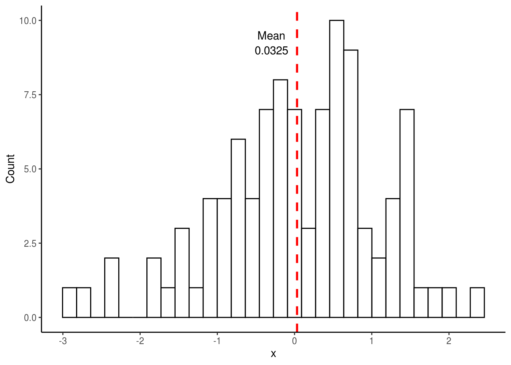
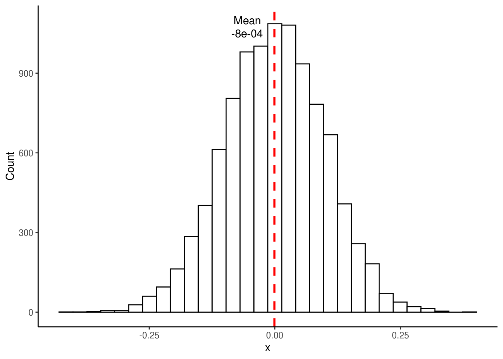
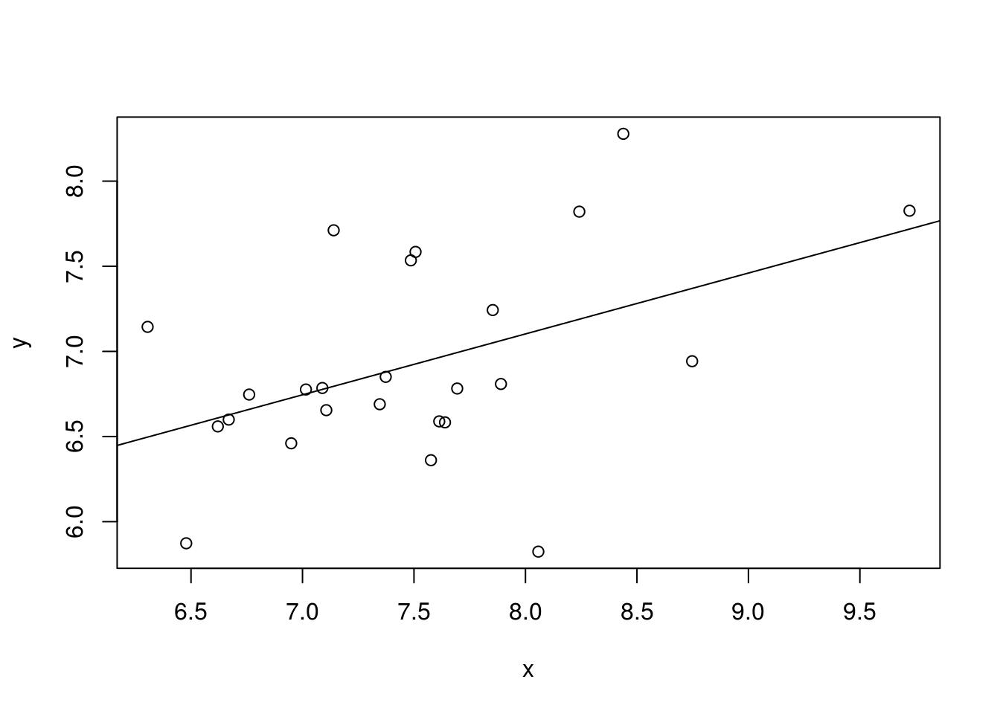
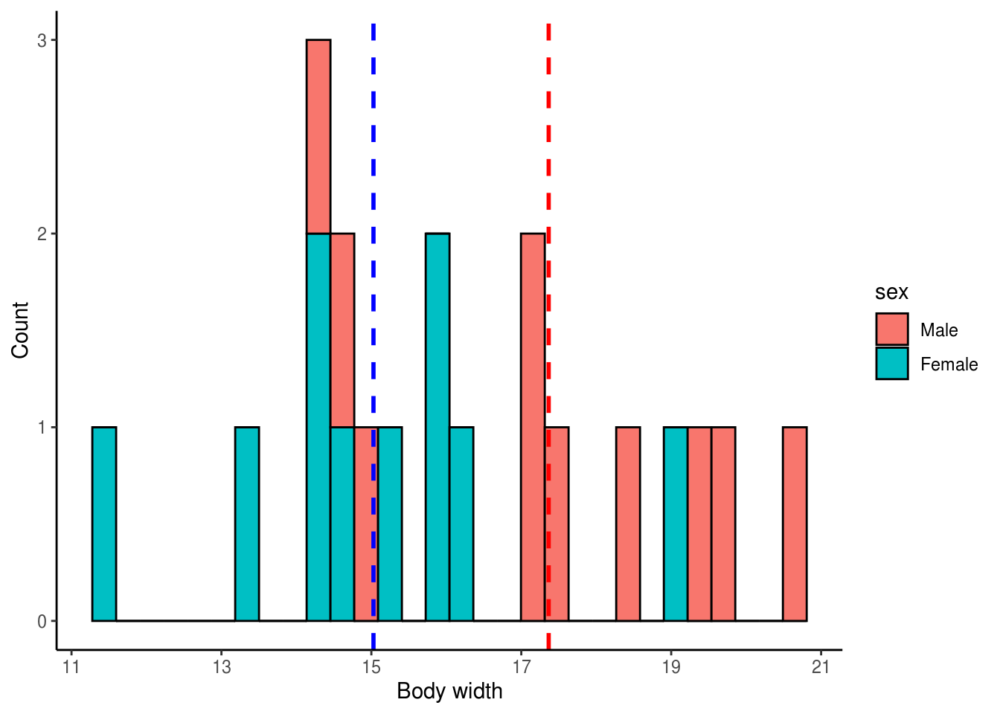
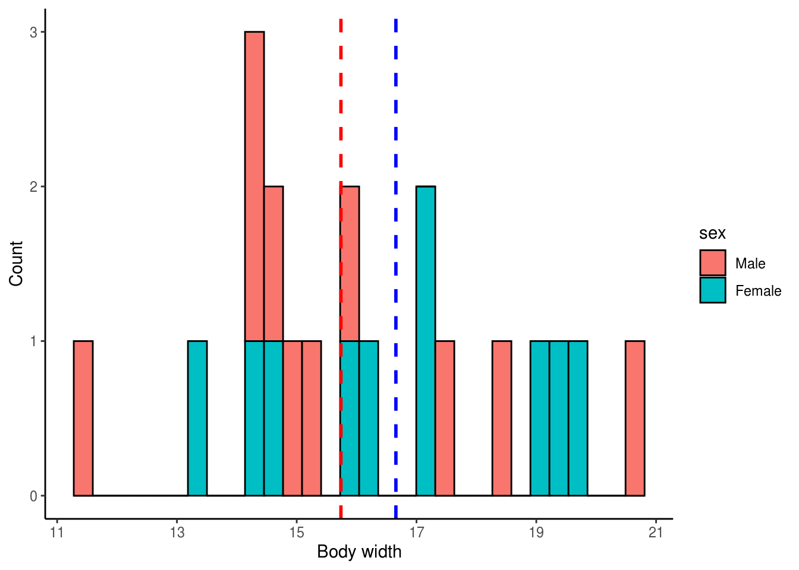
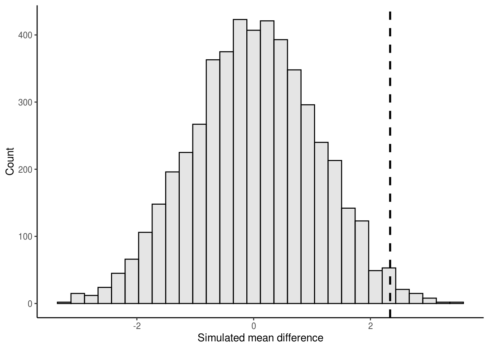
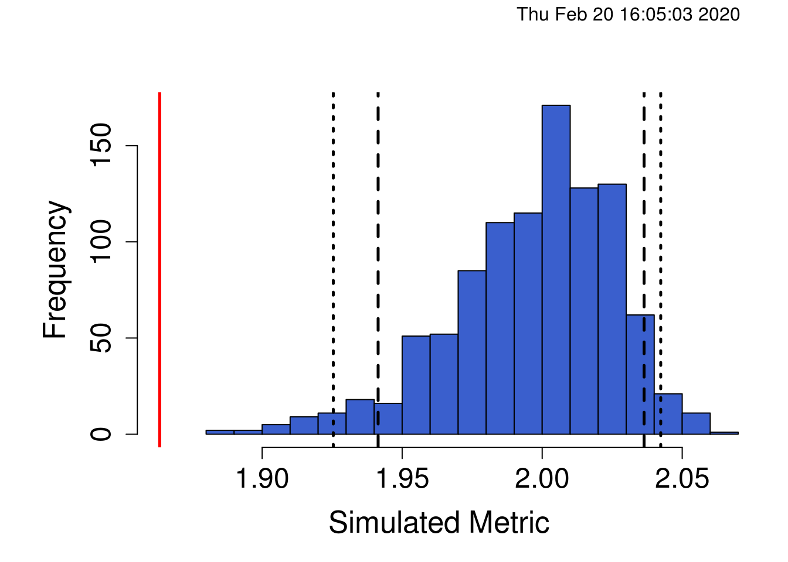
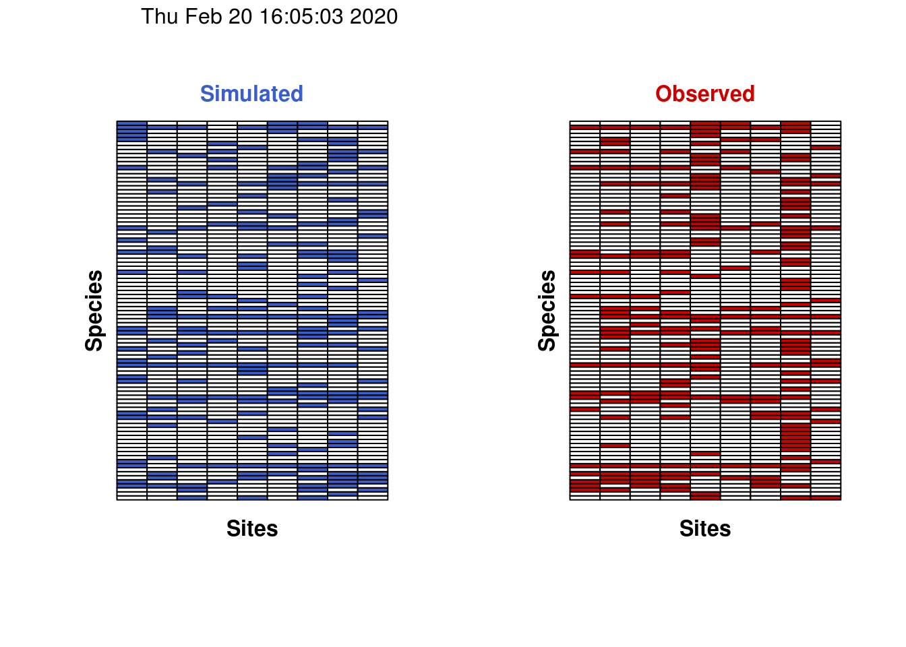

Learning objectives
- Learn to simulate small-scale data in R.
- Understand the basic logic underlying randomization tests and how they differ from standard parametric statistic tests.
- Apply randomization test to real ecological community data.
Lesson outline
Total lesson time: 2 hours
- Brief intro to randomization tests (10 min)
- Simulating small-scale data in R (30 mins)
- General procedure for conducting a randomization test (10 mins)
- Simulate data and perform t-test (10 mins)
- Perform randomization test on same simulated data (30 mins)
- Perform randomization test on real ecological data (30 mins)
Setup
install.packages('dplyr')(ortidyverse)install.packages('ggplot2')(ortidyverse)install.packages("reshape2")install.packages("EcoSimR")
As we saw in previous weeks, standard parametric statistical tests (e.g. ANOVA, standard linear regression) have numerous assumptions that should be respected prior to drawing conclusions from their results. Violation of these assumptions can lead to erroneous conclusions about the population(s) you are trying to understand. Mixed-effects models provided us with a few ways of overcoming the limitations of standard models, while still using all of our data and remaining in a statistical framework that we generally understand and are comfortable with. Randomization tests provide yet another alternative solution to parametric tests.
Many ecological and evolutionary questions ask: Is the observed pattern different than what we would expect by random chance? In other words, the null hypothesis is randomness. Randomization tests (sometimes called permutation tests) allow us to test whether the observed data are different from a random distribution generated by reordering our observed data. If the pattern is random, then it should be just as likely as any other pattern generated by reordering the data. If it is not random, then it should occur more or less frequently than we expect under this distribution.
Randomization tests do not require that we make the same assumptions about our data as standard parametric tests. We do not require that samples be randomly drawn from the population since the goal of randomization tests is not to estimate parameters about the population (parameter estimation requires random samples to estimate means and variances). Similarly, we do not require normality of the data nor do we need equal variances among treatment groups since we are not really thinking about the population from which the data came and are not testing against a distribution (e.g. t distribution) with known shape. This will all become more clear when we walk through an example. But first, an aside.
R allows us to generate fake data (i.e. simulate data) rather easily. This is useful if we just want some toy data to play around with, want to simulate data similar to the type we will collect in an experiment to test our analyses, or want to simulate data collection many times to estimate population parameters (e.g. variance or standard deviation). We can sample existing (i.e. real) data using the sample() function, or take random samples from known statistical distributions (e.g. Normal distribution). We will return to sample() later in this lesson. For now, let’s focus on sampling from known distributions.
We’ll start by taking random samples from a normal distribution with mean equal to 1 and standard deviation equal to 0.
set.seed(42) # Ensure reproducibility of random results.
mean <- 0
sd <- 1
n <- 100
x <- rnorm(n, mean, sd)
# Fancy plot, if desired
ggplot(data.frame(x), aes(x=x)) +
geom_histogram(color="black", fill="white") +
annotate("text", x = -0.30, y = 9, label = round(mean(x), 4)) +
annotate("text", x = -0.30, y = 9.5, label = "Mean") +
ylab("Count") +
geom_vline(xintercept = mean(x), linetype = "dashed",
size = 1, colour = "red") +
theme_classic()
## [1] 0.03251482Note how the mean from the above distribution (0.0325) is not exactly the same as the mean we specified (0). This should not be too surprising since we took random samples from a normal distribution and there is likely going to be variance within these samples. However, if we were to repeat this sampling many times (e.g. 10,000), each time plotting the mean of the distribution, we would expect the mean of this new distribution (i.e. the mean of the 10,000 means) to be much closer to what we specified. Let’s try this.
set.seed(43)
mean <- 0
sd <- 1
size <- 100
x <- replicate(10000, mean(rnorm(size, mean, sd)))
# Fancy plot, if desired
ggplot(data.frame(x), aes(x=x)) +
geom_histogram(color="black", fill="white") +
annotate("text", x = -0.055, y = 1050, label = round(mean(x), 4)) +
annotate("text", x = -0.055, y = 1100, label = "Mean") +
ylab("Count") +
geom_vline(xintercept = mean(x), linetype = "dashed",
size = 1, colour = "red") +
theme_classic()
## [1] -0.0007870843As expected, the above distribution is normal and its mean is much closer to 0 than the distribution generated by sampling only a single time. Interestingly, the same would be true even if the original samples did not come from a normal distribution. For those who took introductory stats, you might remember that this is called the Central Limit Theorem, which states that the distribution of sample means approaches a normal distribution regardless of the shape of the original population’s distribution.
Note that we could also simulate data from a linear model (or any other model), as the example below shows.
set.seed(44)
y_intercept <- 5.1
beta <- 0.23
x <- rnorm(25, mean = 7.6, sd = 0.7)
error <- rnorm(x, mean = 0, sd = 0.5)
y <- y_intercept + beta*x + error
model <- lm(y ~ x)
summary(model)##
## Call:
## lm(formula = y ~ x)
##
## Residuals:
## Min 1Q Median 3Q Max
## -1.29902 -0.26647 -0.02793 0.19286 1.01859
##
## Coefficients:
## Estimate Std. Error t value Pr(>|t|)
## (Intercept) 4.2423 1.0887 3.897 0.000727 ***
## x 0.3575 0.1446 2.473 0.021219 *
## ---
## Signif. codes: 0 '***' 0.001 '**' 0.01 '*' 0.05 '.' 0.1 ' ' 1
##
## Residual standard error: 0.5429 on 23 degrees of freedom
## Multiple R-squared: 0.21, Adjusted R-squared: 0.1757
## F-statistic: 6.116 on 1 and 23 DF, p-value: 0.02122
Now that we know how to simulate data, let’s use this to demonstrate the logic underlying randomization tests. The basic procedure for a randomization test is as follows:
We will perform the above approach on some simulated data. Imagine we had ventured to South America and collected 10 male and 10 female Hercules beetles. We brought the beetles back to the lab and measured the width of their bodies at the largest point. The question we are interested in is: Do male and female Hercules beetles differ in body width? We will assume that body width is normally distributed (i.e. we will draw from a normal distribution).
set.seed(46)
# Male data
df_males <- data.frame(
width = rnorm(10, mean=16.5, sd=2.5),
sex = "Male"
)
# Female data
df_females <- data.frame(
width = rnorm(n=10, mean=15, sd=1.8),
sex = "Female"
)
# Let's combine the datasets
df_body_widths <- rbind(df_males, df_females)
# Let's look at the male and female data
ggplot(df_body_widths, aes(x = width, fill = sex)) +
ylab("Count") + xlab("Body width") +
geom_histogram(bins = 30, colour = "black") +
geom_vline(data = filter(df_body_widths, sex == "Male"), aes(xintercept = mean(width)),
size = 1, linetype = "dashed", colour = "red") +
geom_vline(data = filter(df_body_widths, sex == "Female"), aes(xintercept = mean(width)),
size = 1, linetype = "dashed", colour = "blue") +
theme_classic() 
Males have a mean body width of 17.3656816 while females have a mean body width of 15.0282489
We will use a randomization test to test if males and females differ in body width. If they do not differ, then each body width measurement in our dataframe should be equally likely to belong to a male or to a female. In other words, body width should independent of beetle sex. We can simulate this by randomly rearranging the body width values, effectively removing the effect of sex on body width, and then calculating a test statistic (e.g. t statistic, difference in means). We can do this many times (e.g. 5,000) and ask how many times our observed test statistic falls outside the randomly generated distribution of test statistics. We will use the difference in mean body width as our test statistic so let’s go ahead and calculate the observed difference in body width between male and female beetles.
mean_males <- mean(df_males$width)
mean_females <- mean(df_females$width)
diff_means_obs <- mean_males - mean_femalesThe observed difference in mean body width between male and female Hercules beetles is 2.3374326
Traditionally, if we wanted to determine if there is a significant difference in means between two groups, we could use a t-test. Let’s perform a t-test on these data so we could compare it to the results of the randomization test that we will perform. Note the alternative = two.sided argument passed to t.test(). Since we are interested in whether males and females differ in mean body length without reference to whether one sex is specifically larger or smaller than the other, we are performing a two-sided hypothesis test. Realistically, males could either have larger or smaller body widths so a two-tailed test is appropriate here.
##
## Welch Two Sample t-test
##
## data: width by sex
## t = 2.4886, df = 17.742, p-value = 0.023
## alternative hypothesis: true difference in means is not equal to 0
## 95 percent confidence interval:
## 0.3620858 4.3127795
## sample estimates:
## mean in group Male mean in group Female
## 17.36568 15.02825From the t-test above, we see that our t-statistic has a value of 2.49 and that males and females differ significantly in body width (P < 0.05). From the means reported in the t-test, it looks like males have larger body widths than females (17.36 vs. 15.03). Let’s now perform a randomization test. To get a better sense of what we’re doing, let’s first perform a single reshuffling of the data and look at the resulting distribution of the data.
# Set seed for reproducible results
set.seed(47)
# Randomly reshuffle the width column
reshuffled <- df_body_widths
reshuffled$width <- sample(reshuffled$width,
size = nrow(reshuffled), replace = FALSE)
# View data to confirm that values have been reshuffle
head(df_body_widths)## width sex
## 1 14.25271 Male
## 2 17.03033 Male
## 3 14.67852 Male
## 4 19.58880 Male
## 5 19.42210 Male
## 6 14.94379 Male## width sex
## 1 16.00825 Male
## 2 14.62197 Male
## 3 14.25271 Male
## 4 11.53578 Male
## 5 17.57305 Male
## 6 14.94379 MaleNote the differences in body width values between the original and reshuffled dataframes above.
# Plot histograms of reshuffled data
ggplot(reshuffled, aes(x = width, fill = sex)) +
ylab("Count") + xlab("Body width") +
geom_histogram(bins = 30, colour = "black") +
geom_vline(data = filter(reshuffled, sex == "Male"), aes(xintercept = mean(width)),
size = 1, linetype = "dashed", colour = "red") +
geom_vline(data = filter(reshuffled, sex == "Female"),aes(xintercept = mean(width)),
size = 1, linetype = "dashed", colour = "blue") +
theme_classic()
# Let get the mean difference of this single simulation
mean_males_sim1 <- mean(reshuffled %>% filter(sex == "Male")
%>% pull(width))
mean_females_sim1 <- mean(reshuffled %>% filter(sex == "Female")
%>% pull(width))
mean_diff_sim1 <- mean_males_sim1 - mean_females_sim1The mean difference from a single reshuffling of the data is -0.9177916
We can see that the mean difference from the simulated data is considerably different from the observed mean difference. This makes sense since the body width values were randomly assigned to males and females. Let’s now do this 5,000 times, each time calculating the mean difference in body width.
# Set seed for reproducible results
set.seed(49)
# Initialize a list to store the simulated test-statistics
simulated_means <- list()
nreps = 5000 # 5000 iterations
for(i in 1:nreps){
# Create temporary dataframe to permute so we don't modify the original
reshuffled <- df_body_widths
# Permute the width column with the 'sample()' function.
reshuffled$width <- sample(reshuffled$width, size = nrow(reshuffled),
replace = FALSE)
# Calculate the means for each sex
mean_males_sim <- mean(reshuffled %>% filter(sex == "Male")
%>% pull(width))
mean_females_sim <- mean(reshuffled %>% filter(sex == "Female")
%>% pull(width))
# Calculate to difference between simulated male and female body width
# means
mean_diff_sim <- mean_males_sim - mean_females_sim
# Append simulated mean difference to list
simulated_means[i] <- mean_diff_sim
}
# Unlist simulated means list into numeric vector
simulated_means <- unlist(simulated_means)
# Show first 10 simulated mean differences
simulated_means[1:10]## [1] 0.1294759 -1.1193729 0.0234485 1.3749776 -1.4291942 0.1071253
## [7] -1.3720400 1.5833893 -0.4112268 -1.9538498We now have a numeric vector containing 5,000 simulated differences in mean body width between males and females. Let’s plot a histogram of the simulated values and overlay onto the histogram our observed mean difference.
ggplot() +
ylab("Count") + xlab("Simulated mean difference") +
geom_histogram(aes(x = simulated_means), bins = 30,
fill = "grey", alpha = 0.4, colour = "black") +
geom_vline(xintercept = diff_means_obs, size = 1,
linetype = "dashed", colour = "black") +
theme_classic()
Finally, to get our P-value, we calculate the number of times the simulated mean difference exceeded the observed mean difference from our data. Because we are performing a two-tailed test, this amounts to determining the number of times the simulated mean difference is either greater or lesser than the observed difference. We can do this by asking how many times the absolute value of the simulated mean difference is greater or equal to the absolute value of the observed mean difference.
abs_simulated_means <- abs(simulated_means)
abs_diff_means_obs <- abs(diff_means_obs)
exceed_count <- length(abs_simulated_means[abs_simulated_means >=
abs_diff_means_obs])
p_val <- exceed_count / nrepsThe P-value from the randomization test is 0.0268
As we can see, the randomization test provides results that are largely consistent with the t-test. This is not surprising since we specifically sampled independent data from normal distributions with similar variances. In other words, our sampled data do not violate any of the assumptions of the t-test and in such a case the difference in means is by definition analogous to the t statistic used in the t-test. There are some cases where randomization tests provide more accurate (or exact) P-values than parametric tests (e.g. small samples from skewed distributions) but even more diverse applications of randomization tests are found in ecology and evolutionary biology.
Randomization tests are applied in all corners of ecological and evolutionary research but for our purpose we’ll turn to the field of community ecology for an example. Community ecologists have long been interested in understanding the factors that shape the organization of ecological communities. Are the species in an ecological community just a random assortment of species available from the regional species pool? Conversely, do species interactions and shared resources determine the local distribution of species, such that some species are found together more often than we would expect by chance whereas other never or only rarely co-occur. The idea that competition and shared resources are important in driving community assembly is known as assembly rules and was first proposed by Diamond (1975). An important null model based on randomization tests was later developed to test what species assemblages would look like in the absence of competition and shared resources (Connor and Simberloff 1979). We will apply one such randomization test in this section.
First, let’s look at the type of data we need for this analysis.
# Load in example dataset
comMatrix_example <- "https://uoftcoders.github.io/rcourse/data/lec09_CommunityMatrix_Example.csv"
download.file(comMatrix_example, "lec09_CommunityMatrix_Example.csv")
comMatrix_example <- read_csv("lec09_CommunityMatrix_Example.csv")## # A tibble: 5 x 5
## X1 `Site 1` `Site 2` `Site 3` `Site 4`
## <chr> <dbl> <dbl> <dbl> <dbl>
## 1 Species 1 0 0 0 1
## 2 Species 2 0 1 1 1
## 3 Species 3 1 0 1 0
## 4 Species 4 1 1 1 0
## 5 Species 5 0 1 0 1# Sliced to return a numeric Matrix, which is required for
# colSums() and rowSums()
colSums(comMatrix_example[,2:5]) ## Site 1 Site 2 Site 3 Site 4
## 2 3 3 3## [1] 1 3 2 3 2As you can see, the data is a matrix with sites (e.g. islands, quadrats, etc.) as columns and species as rows. Each cell represents whether a species is present (1) or absent (0) at that site. This type of data is often referred to as a presence-absence matrix. The column totals (using colSums()) gives us a sense of how species richness varies across the sites while the row totals (using rowSums()) tells us how rare or common a species is across all sites. The question we are interested in addressing is: Are the observed species co-occurrence patterns the result of species interactions or random chance?
Let’s read in some real data before proceeding. The data are from the National Ecological Observatory Network and represent the presence and absence of plant species in eight square meter plots during the month of July, 2017, at a single site around Harvard, Boston, MA. Note this is only a subset of the very large dataset provided by NEON, which dates back to 2013 and includes about 46 different sites.
# Load in NEON data
neon_data <- "https://uoftcoders.github.io/rcourse/data/NEON_PlantPA_HARV_201707.csv"
download.file(neon_data, "NEON_PlantPA_HARV_201707.csv")
neon_data <- read_csv("NEON_PlantPA_HARV_201707.csv")## Observations: 996
## Variables: 35
## $ uid <chr> "1be45bc7-f9c6-4975-9d20-34b4d30b8e21", "af1…
## $ namedLocation <chr> "HARV_026.basePlot.div", "HARV_026.basePlot.…
## $ domainID <chr> "D01", "D01", "D01", "D01", "D01", "D01", "D…
## $ siteID <chr> "HARV", "HARV", "HARV", "HARV", "HARV", "HAR…
## $ decimalLatitude <dbl> 42.41079, 42.41079, 42.41079, 42.41079, 42.4…
## $ decimalLongitude <dbl> -72.24726, -72.24726, -72.24726, -72.24726, …
## $ geodeticDatum <chr> "WGS84", "WGS84", "WGS84", "WGS84", "WGS84",…
## $ coordinateUncertainty <dbl> 20.3, 20.3, 20.3, 20.3, 20.3, 20.3, 20.3, 20…
## $ elevation <dbl> 193.2, 193.2, 193.2, 193.2, 193.2, 193.2, 19…
## $ elevationUncertainty <dbl> 0.3, 0.3, 0.3, 0.3, 0.3, 0.3, 0.3, 0.3, 0.3,…
## $ plotID <chr> "HARV_026", "HARV_026", "HARV_026", "HARV_02…
## $ subplotID <chr> "40.1.1", "40.1.1", "40.3.1", "32.4.1", "32.…
## $ endDate <date> 2017-07-03, 2017-07-03, 2017-07-03, 2017-07…
## $ boutNumber <dbl> 1, 1, 1, 1, 1, 1, 1, 1, 1, 1, 1, 1, 1, 1, 1,…
## $ samplingProtocolVersion <chr> "NEON.DOC.014042vG", "NEON.DOC.014042vG", "N…
## $ divDataType <chr> "plantSpecies", "plantSpecies", "otherVariab…
## $ targetTaxaPresent <chr> "Y", "Y", "Y", "Y", "Y", "Y", "Y", "Y", "Y",…
## $ otherVariablesPresent <chr> "Y", "Y", "Y", "Y", "Y", "Y", "Y", "Y", "Y",…
## $ taxonID <chr> "PIST", "VACO", NA, "MACA4", "VAPA4", NA, "T…
## $ scientificName <chr> "Pinus strobus L.", "Vaccinium corymbosum L.…
## $ taxonRank <chr> "species", "species", NA, "species", "specie…
## $ family <chr> "Pinaceae", "Ericaceae", NA, "Liliaceae", "E…
## $ nativeStatusCode <chr> "N", "N", NA, "N", "N", NA, "N", "N", "N", N…
## $ identificationQualifier <chr> NA, NA, NA, NA, NA, NA, NA, NA, NA, NA, NA, …
## $ taxonIDRemarks <chr> NA, NA, NA, NA, NA, NA, NA, NA, NA, NA, NA, …
## $ morphospeciesID <lgl> NA, NA, NA, NA, NA, NA, NA, NA, NA, NA, NA, …
## $ morphospeciesIDRemarks <lgl> NA, NA, NA, NA, NA, NA, NA, NA, NA, NA, NA, …
## $ identificationReferences <chr> NA, NA, NA, NA, NA, NA, NA, NA, NA, NA, NA, …
## $ otherVariables <chr> NA, NA, "scat", NA, NA, "lichen", NA, NA, NA…
## $ percentCover <dbl> 7.0, 9.0, 0.5, 3.0, 5.0, 0.5, 2.0, 0.5, 1.0,…
## $ heightPlantOver300cm <chr> "N", "N", NA, "N", "N", NA, "N", "N", "N", N…
## $ heightPlantSpecies <lgl> NA, NA, NA, NA, NA, NA, NA, NA, NA, NA, NA, …
## $ remarks <chr> NA, NA, "Gypsy moth", NA, NA, NA, NA, NA, NA…
## $ measuredBy <chr> "WpWHyjh7ZEbsFcxLGlzbonUvwbNLZ84R", "WpWHyjh…
## $ recordedBy <chr> "Pes0SJTi6mB/L3kaeuPRUby8XD59hvb8", "Pes0SJT…Clearly this data is not in the form that we need it to be. As I’m sure you know by now, R has many useful libraries and functions that should allow us to change this relatively easily. We’ll rely on the reshape2 package to transform our dataset into a presence-absence matrix.
neon_data_filtered <- neon_data %>%
# We only want rows with plant species and not 'otherVariables'
dplyr::filter(divDataType == "plantSpecies") %>%
# To create a presence-absence matrix, we only need the taxonID
# (i.e. species) and the plotID (i.e. Site)
dplyr::select(plotID, taxonID)
# Create Presence-Absence matrix
# Keep only unique rows so that cells represent presence-absence
# and not abundances
neon_data_filtered <- unique(neon_data_filtered)
PA_matrix <- dcast(neon_data_filtered, formula = taxonID ~ plotID, fun.aggregate = length)
head(PA_matrix)## taxonID HARV_002 HARV_005 HARV_017 HARV_018 HARV_020 HARV_022 HARV_026
## 1 ACER 0 0 0 0 1 1 0
## 2 ACRU 1 1 1 1 1 1 1
## 3 ACSAS 0 0 0 0 1 0 0
## 4 AMBR2 0 0 0 0 1 0 0
## 5 AMELA 0 1 0 0 0 1 1
## 6 ANQUQ 0 1 0 0 1 0 0
## HARV_027 HARV_030
## 1 1 0
## 2 1 0
## 3 1 0
## 4 0 0
## 5 0 0
## 6 0 0Well that was painless! We now have our data in a form that is usable in our randomization test but we need to decide two things first: (1) What is our test statistic? This is what we’ll use to determine if co-occurrence patterns are random or not, similar to how we used the difference in means to tell if male and female beetles differed in length. (2) How do we randomize such a large matrix? Do we randomly permute rows and columns so that each cell is equally likely to contain a 1 or 0? Do we constrain row permutations so that row totals (i.e. species rarity) are preserved but site richness is free to vary? Do we constrain column permutations so that column totals (i.e. site richness) are preserved but species rarity can vary? It turns out there are exactly 9 different ways a matrix like this can be randomized, each involving a different set of constraints and biological assumptions (Gotelli 2000).
For our purpose, we will preserve species rarity but will assume that each site is equally likely to be colonized. In other words, we are assuming that sites do not vary in habitat quality or anything else that may change the number of species that can occupy it. However, we want rare species to remain rare throughout the permutations. This model is analogous to the SIM2 algorithm in Gotelli (2000) and is reasonable in our case since the sites are relatively close in proximity (i.e. likely have similar habitat quality).
For our index, we will use the C-score (Stone and Roberts 1990). We will not go into the calculation of this score here but suffice it to say that the higher the C-score, the less co-occurrence (on average) between all pairs of species in the matrix (i.e. a more segregated matrix). Smaller C-scores indicate an aggregated matrix (i.e. more co-occurrence among species pairs). Thankfully for us, there is an R package that implements the randomization algorithm for us. Let’s go ahead and conduct the analysis.
set.seed(50)
# Perform co-occurrence analysis
co_oc_analysis <- cooc_null_model(PA_matrix, algo = "sim2",
nReps=1000,
metric = "c_score",
suppressProg = TRUE,
saveSeed = TRUE)
# Summarize output from co-occurrence analysis
summary(co_oc_analysis)## Time Stamp: Thu Feb 20 16:05:03 2020
## Reproducible: TRUE
## Number of Replications: 1000
## Elapsed Time: 1.6 secs
## Metric: c_score
## Algorithm: sim2
## Observed Index: 1.8634
## Mean Of Simulated Index: 1.9969
## Variance Of Simulated Index: 0.00084441
## Lower 95% (1-tail): 1.9414
## Upper 95% (1-tail): 2.0364
## Lower 95% (2-tail): 1.9254
## Upper 95% (2-tail): 2.0423
## Lower-tail P > 0.001
## Upper-tail P < 0.999
## Observed metric > 0 simulated metrics
## Observed metric < 1000 simulated metrics
## Observed metric = 0 simulated metrics
## Standardized Effect Size (SES): -4.5918
As we can see, our observed C-score (red line) is much lower (significantly so) than we would expect by random chance given the species in our community. This suggests the community is aggregated such that some species are more likely to occur with other species in the community than we would expect if the communities were assembling themselves randomly. This can happen if there is facilitation and some species create ecological niches or favourable habitat for other species such that they occur more often. Importantly, the C-score is an average across all pairwise comparisons in the matrix and doesn’t tell us anything about which specific species pairs may be more or less likely to co-occur. Identifying which species pairs are driving this pattern would require quite a bit more time, and identifying the ecological mechanisms behind co-occurrence patterns of specific species pairs requires careful experimentation.
For the sake of completeness, we can also visualize a single permutation of the matrix compared against our observed matrix.

Notice how all of the rows in the two figures above always have the same number of filled squares. This is confirmation that the rarity of species (i.e. row totals) has been preserved during the permutation.
Testing for mean differences among groups and for putative rules governing community assembly are only two of the many uses for randomization tests. In this section, I briefly highlight other uses of data randomization in statistics, ecology, and evolutionary biology.
Randomization tests are additionally used in numerous fields in ecology and evolutionary biology such as spatial ecology (e.g. testing spatial patterns in animal distribution and allowing for spatial autocorrelations), phylogenetics (e.g. permutations of species phylogenies), community ecology, and environmental monitoring. In addition to randomization tests in the way that we’ve demonstrated here, randomization procedures play an important role in other aspects biology and statistics.
Bootstrapping involves sampling data with replacement to estimate the sampling distribution of a population estimator (e.g. mean, median, standard deviation). This is often done to estimate the error (e.g. standard error, confidence interval) around the estimated population parameter.
Cross-validation involves randomly subsampling a dataset, which is then held as a model validation set on which the predictive ability of a model can be tested. A model is tested on the remaining data (i.e. the training set) and used to predict the validation set. This is done many times to estimate the accuracy of the model.
Monte-carlo methods are a huge class of methods that generally involve simulating random numbers to estimate probability distributions and for obtaining numerical solution to really complicated problems. For our purposes, these are especially common in computational biology, genomics and in Bayesian inference (e.g. building phylogenies).
This work is licensed under a Creative Commons Attribution 4.0 International License. See the licensing page for more details about copyright information.